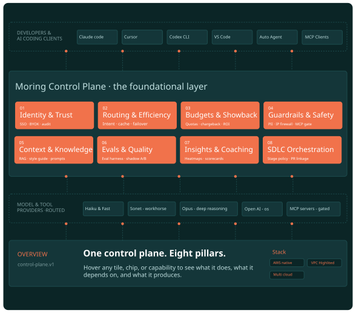

From sprawl to
foundation.
Intelligent infrastructure for agents.
Every developer interaction governed by one control plane: eight capability pillars on a shared policy layer.

One AI layer. Your existing cloud underneath.
The moring Platform deploys on top of the cloud infrastructure you already operate. We add the agentic AI capabilities your team needs without disrupting what already works — Kubernetes, observability, CI/CD, IaC, your existing security and compliance posture all stay.
Layer 03 · AI Solutions
Persona suites that ship outcomes, scoped per customer.
Layer 02 · moring Platform
Ten composable primitives. Start with one. Add as you grow.
Layer 01 · Your existing cloud
Kubernetes · CI/CD · IaC · your security & compliance — untouched.
Everything you need to build & run AI.
Each component is production-grade on its own. Together they form the most complete infrastructure for enterprise agentic AI. Start with one. Compose the rest as you scale.
RAG Pipelines
End-to-end retrieval with advanced chunking, embedding, and retrieval. Multi-modal docs and custom knowledge bases.
AI Gateway
Unified model routing. Intelligent load balancing, fallback, rate limiting, and cost tracking across providers.
Agent Observability
Trace every decision, monitor latency, track token usage, detect anomalies in real time.
Hosted MCP Servers
Managed MCP servers that connect agents to enterprise tools, APIs, and data with granular access control.
GPU Optimization
Intelligent GPU scheduling and allocation. Maximize utilization, minimize inference cost across workloads.
Model Serving
High-performance serving with auto-scaling, batching, caching. Custom models, fine-tuned variants, pipelines.
Model Performance
Continuous evaluation, A/B testing, automatic prompt optimization. Accuracy, latency, cost per version.
AI Security & Compliance
Data encryption, PII detection, prompt-injection prevention, audit logging for regulatory compliance.
Cost Optimization
Real-time cost tracking across all AI operations. Set budgets, get alerts, auto-route to cost-effective models.
Evaluation Suite
Comprehensive framework for testing agent behavior, accuracy, safety, and reliability before production.
Your infrastructure. Our AI layer. Full control.
The platform runs on the cloud you already operate — AWS, Azure, GCP, or on-prem. Your data never leaves your environment. Your keys, your perimeter, your audit trail.
- Multi-cloud and hybrid deployment out of the box.
- Zero data exfiltration — everything stays inside your VPC.
- Kubernetes-native with Helm charts and Terraform modules.
- SOC 2, ISO 27001, HIPAA compliant infrastructure patterns.
Start with one component. Expand as you grow.
No big-bang deployment. Each module works independently and integrates with your existing observability, CI/CD, and security tooling.
- Incremental adoption — start small, scale fast.
- Works with your stack — existing observability and CI/CD tools.
- API-first design with comprehensive SDKs.
- Each component production-ready on its own.
The same primitives ship AI-DLC and AI Ops.
Whichever solution you start with, you're standing on the same infrastructure. Year-two business agents amortize on the same gateway, the same observability, the same security layer. Build once, deploy many.
AI-DLC for engineering.
Governed agentic SDLC. Per-PR cost attribution. Failure drill. 5-engineer case study. Same components, scoped to engineering.
Explore AI-DLC →AI Ops for operations.
Event correlation. Topology-aware RCA. Predictive ops. Automated remediation. Same components, applied to operations.
Explore AI Ops →Finance · Customer ops.
Year-two persona suites ship on the same platform. The substrate amortizes — the second agent costs less than the first.
See the roadmap →See how the platform accelerates your AI initiatives.
A 30-minute AI Discovery workshop with Rajarajan gets you a baseline metric, an architecture sketch against your stack, and a yes/no on outcome pricing — before anyone signs anything.